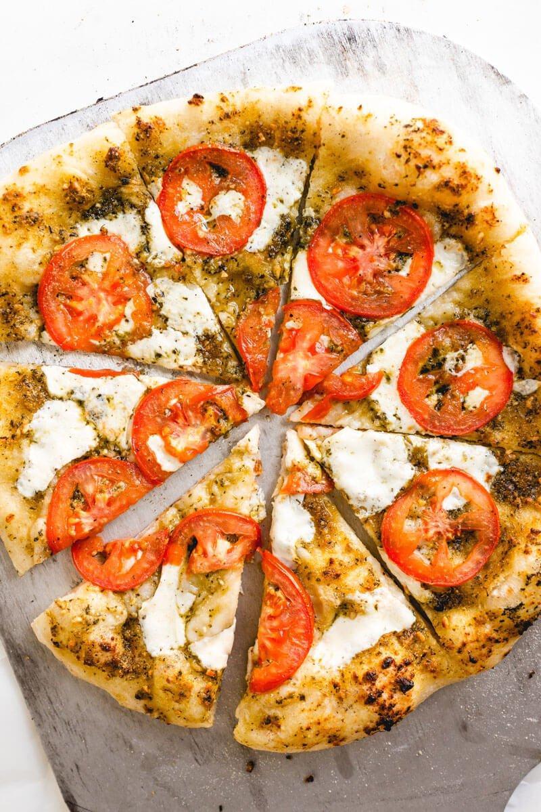

Pesto Pizza

Ingredients
- 1 pre-baked pizza crust
- 1/2 cup of pesto
- 1 ripe tomato
- 1/2 cup of chopped green bell pepper
- 1 can of chopped olives
- 1/2 small red onion
- 1 canof drained artichoke hearts
- 1 cup of crumbled feta cheese
Steps
- Preheat oven to 450 degrees F (230 degrees C).
- Spread pesto on pizza crust. Top with tomatoes, bell peppers, olives, red onions, artichoke hearts and feta cheese.
- Bake for 8 to 10 minutes, or until cheese is melted and browned.